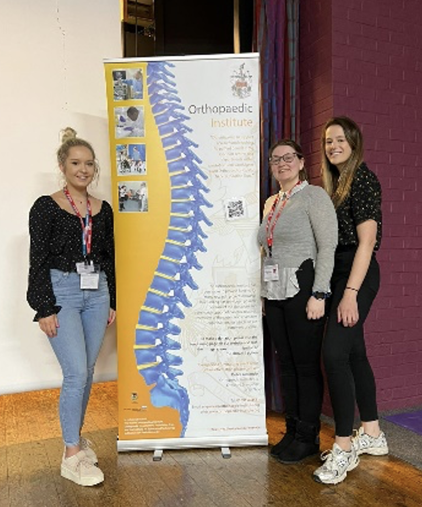

Dr Jade Perry (Post doctorate researcher), Rebecca Davies and Emily Storey (3rd Year PhD students) of the Oswestry and Keele Orthopaedic Research group (RJAH Orthopaedic Hospital) recently visited the Marches School in Oswestry. In preparation for choosing their GCSE subjects, they talked to Year 9 students about science. This included how science is used in all careers, not just those in the science sector, and how their career paths led us to where they are now. To highlight their work in the Orthopaedic Hospital, they informed students of various roles scientists have there, from research to patient diagnostics, and their personal experiences being at forefront of the COVID-19 pandemic to perform routine testing. They hoped that this encouraged students to consider the benefits of science in general, broaden their knowledge about science-orientated careers, and convince them that science can be an interesting career choice that benefits the general public.
